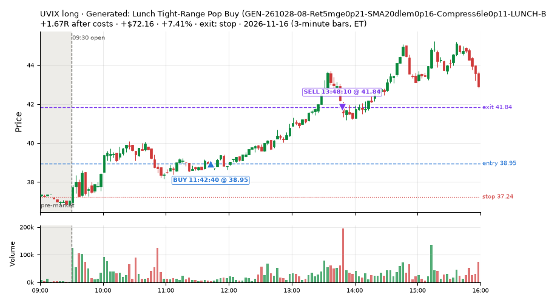
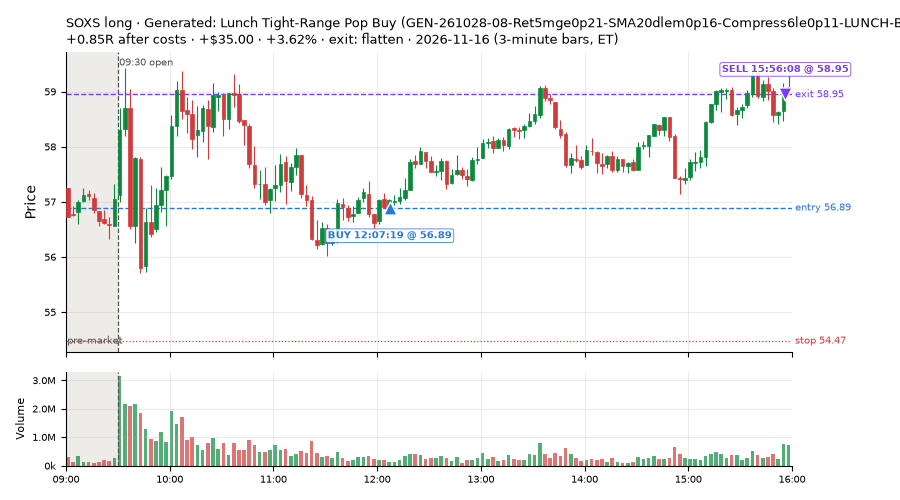
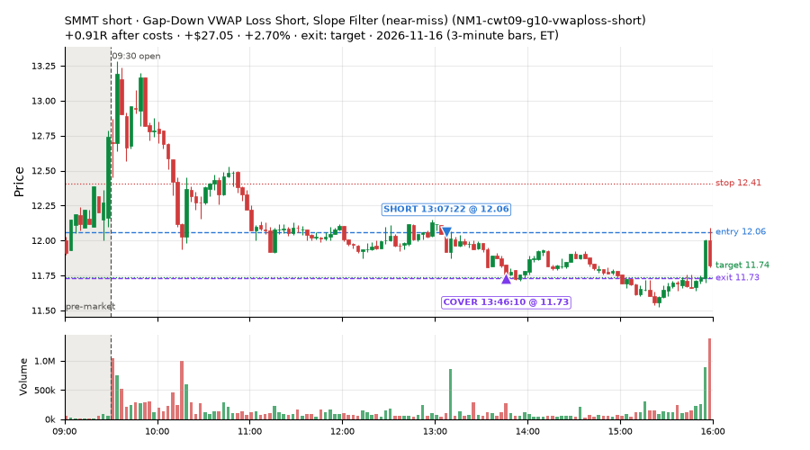
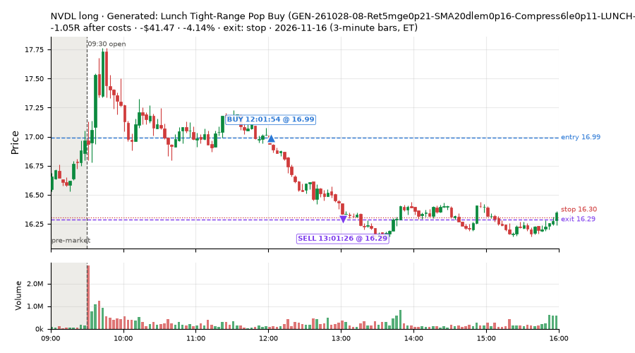
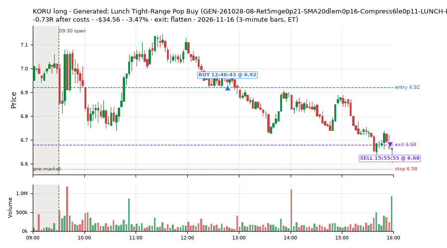
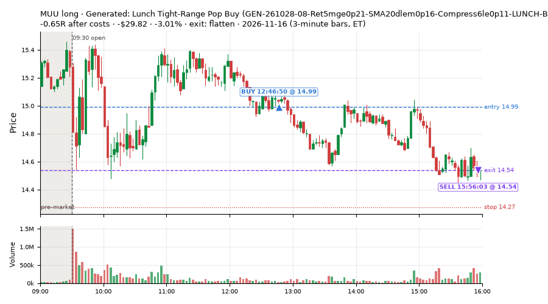
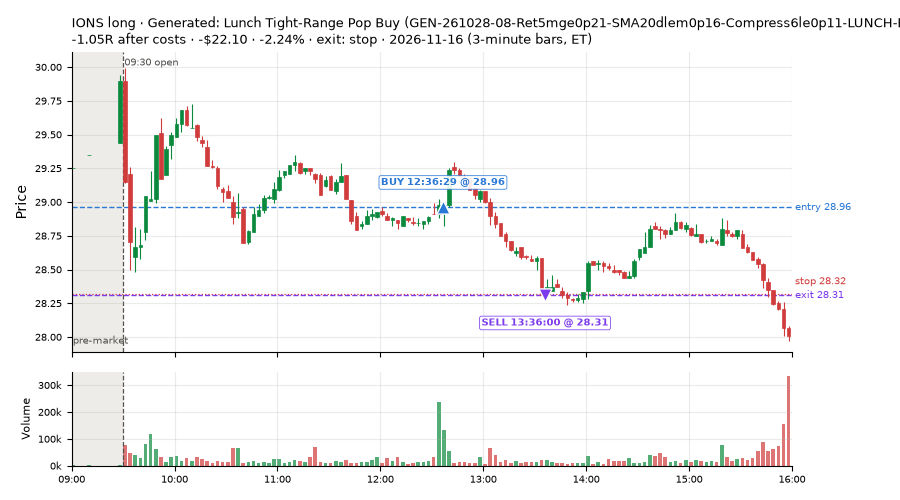
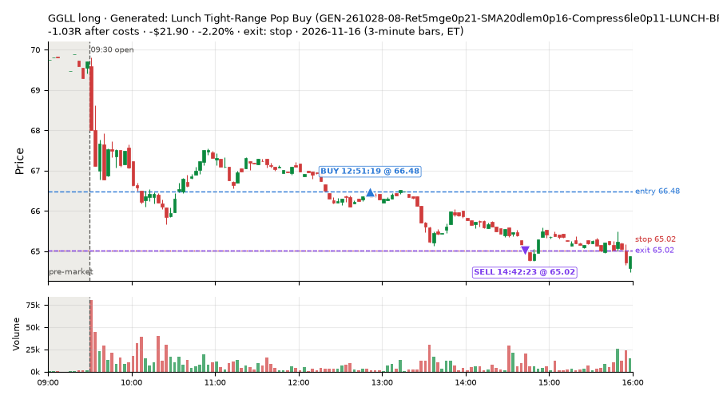

83 trades · win rate 39% · P/L $-129.61
PROBATION: no live setup has passed both locked test periods. 10 owner-directed setups added 2026-10-08 (MarcoFlow top 5 + 5 new), untested live. RW6G1 (RW6 + VWAP band guard) added 2026-10-09, probation.

| Symbol | Setup | Side | In | Out | Entry | Exit | Exit reason | % gained | P/L |
|---|---|---|---|---|---|---|---|---|---|
| UVIX | Generated: Lunch Tight-Range Pop Buy (GEN-261028-08-Ret5mge0p21-SMA20dlem0p16-Compress6le0p11-LUNCH-BRoplt0p35-holdtr-long) | long | 11:42 | 13:48 | 38.95 | 41.84 | stop | +7.41% | $72.16 |
| SOXS | Generated: Lunch Tight-Range Pop Buy (GEN-261028-08-Ret5mge0p21-SMA20dlem0p16-Compress6le0p11-LUNCH-BRoplt0p35-holdtr-long) | long | 12:07 | 15:56 | 56.89 | 58.95 | flatten | +3.62% | $35.00 |
| SMMT | Gap-Down VWAP Loss Short, Slope Filter (near-miss) (NM1-cwt09-g10-vwaploss-short) | short | 13:07 | 13:46 | 12.06 | 11.73 | target | +2.70% | $27.05 |
| Symbol | Setup | Side | In | Out | Entry | Exit | Exit reason | % lost | P/L |
|---|---|---|---|---|---|---|---|---|---|
| NVDL | GEN-261028-08-Ret5mge0p21-SMA20dlem0p16-Compress6le0p11-LUNCH-BRoplt0p35-holdtr-long | long | 12:01 | 13:01 | 16.99 | 16.29 | stop | -4.14% | $-41.47 |
| KORU | GEN-261028-08-Ret5mge0p21-SMA20dlem0p16-Compress6le0p11-LUNCH-BRoplt0p35-holdtr-long | long | 12:46 | 15:55 | 6.92 | 6.68 | flatten | -3.47% | $-34.56 |
| MUU | GEN-261028-08-Ret5mge0p21-SMA20dlem0p16-Compress6le0p11-LUNCH-BRoplt0p35-holdtr-long | long | 12:46 | 15:56 | 14.99 | 14.54 | flatten | -3.01% | $-29.82 |
| IONS | GEN-261028-08-Ret5mge0p21-SMA20dlem0p16-Compress6le0p11-LUNCH-BRoplt0p35-holdtr-long | long | 12:36 | 13:36 | 28.96 | 28.31 | stop | -2.24% | $-22.10 |
| GGLL | GEN-261028-08-Ret5mge0p21-SMA20dlem0p16-Compress6le0p11-LUNCH-BRoplt0p35-holdtr-long | long | 12:51 | 14:42 | 66.48 | 65.02 | stop | -2.20% | $-21.90 |








Signal to fill: median 2s, 90th percentile 4s (83 trades). Bars close each minute; the order follows the bar close.
Best excursion (MFE): median 0.33R; worst (MAE) median 0.50R. 36% of trades never got +0.25R in our favour; 0 reached +1R and still closed at or below 0.
| Symbol | Setup | Best R | Worst R | Closed R |
|---|---|---|---|---|
| TTAN | GEN-261023-04-EMAdChglem0p028-PDHdistle0p074-EMAdifflem0p46-PM-QQQltm0p6-t1s1-long | +0.31 | -1.06 | -1.35 |
| NGVT | GEN-261020-03-MACDhge0p079-BarsSinceLODle5-MID-BRvwlt0p3-t05s05-long | +0.36 | -1.00 | -1.28 |
| IONS | GEN-261028-08-Ret5mge0p21-SMA20dlem0p16-Compress6le0p11-LUNCH-BRoplt0p35-holdtr-long | +0.52 | -1.01 | -1.05 |
| CDNA | ST4-emadn-long-am-t1s05-FD | +0.32 | -1.08 | -1.24 |
| VSXY | GEN-261027-08-ORBfailDn-FromPCATRlem0p96-LUNCH-QQQltm0p6-hold-short | +0.35 | -1.08 | -1.16 |
| Entry time | Trades | Win | Avg R | P/L |
|---|---|---|---|---|
| 10:30-11:30 | 1 | 0% | -0.21 | $-4.33 |
| 11:30-13:00 | 57 | 35% | -0.11 | $-146.53 |
| 13:00-14:00 | 16 | 50% | +0.03 | $38.98 |
| 14:00-16:00 | 9 | 44% | -0.19 | $-17.73 |
| Setup | Trades | Win | Avg R after costs | Adj R (net of SPY) | Avg R ex-market (all sessions) | P/L |
|---|---|---|---|---|---|---|
| Generated: Midday Low Bounce Buy (MACD up) (GEN-261020-03-MACDhge0p079-BarsSinceLODle5-MID-BRvwlt0p3-t05s05-long) | 2.0 | 0% | -1.17 | -0.68 | – | $-21.28 |
| Generated: PM Upper-Wick Short (weak mkt) (GEN-261022-05-MACDhge0p079-UpWickge0p71-ORHdistlem0p38-PM-BRoplt0p35-holdtr-short) | 9.0 | 78% | +0.26 | +0.14 | -0.09 (beta -2.03, n 9) | $43.74 |
| Generated: PM Prior-High Dip Buy (QQQ down) (GEN-261023-04-EMAdChglem0p028-PDHdistle0p074-EMAdifflem0p46-PM-QQQltm0p6-t1s1-long) | 2.0 | 0% | -0.98 | -0.81 | – | $-23.87 |
| Generated: Lunch Failed-Breakdown Short (GEN-261027-08-ORBfailDn-FromPCATRlem0p96-LUNCH-QQQltm0p6-hold-short) | 17.0 | 71% | +0.40 | -0.35 | -0.09 (beta -0.73, n 17) | $49.14 |
| Generated: Lunch Tight-Range Pop Buy (GEN-261028-08-Ret5mge0p21-SMA20dlem0p16-Compress6le0p11-LUNCH-BRoplt0p35-holdtr-long) | 34.0 | 18% | -0.29 | -0.04 | -0.49 (beta -0.38, n 34) | $-176.24 |
| Generated: Midday Choppy Oversold Buy (GEN-261029-02-RSI2le0-VWAPcrossesge9-DayRngVsPrevle0p52-MID-BRvwlt0p4-hold-long) | 9.0 | 22% | -0.27 | +0.05 | -1.17 (beta -1.73, n 9) | $-29.90 |
| * Oversold Pop with Breadth Turning Up (near-miss) (LD1-ns1-breadthup-t05s1-long) | 3.0 | 33% | -0.26 | +0.22 | -0.34 (beta -0.12, n 5) | $-15.09 |
| * Oversold Slope Turn after an SPY Dip-Turn (near-miss) (LD3-st2-idxturn-t05s1-long) | 1.0 | 100% | +0.62 | +1.16 | – | $7.74 |
| Gap-Down VWAP Loss Short, Slope Filter (near-miss) (NM1-cwt09-g10-vwaploss-short) | 2.0 | 100% | +0.63 | +0.52 | – | $50.33 |
| EMA Cross-Down Dip Buy (all day) (ST4-emadn-long-am-t1s05-FD) | 1.0 | 0% | -1.24 | -1.30 | – | $-13.06 |
| RSI Collapse Dip Buy, Nasdaq-below-VWAP only (all day) (ST7Q-rsi50dn-qqqbelowvwap-long-t1s1-FD) | 3.0 | 33% | -0.00 | +0.11 | +0.08 (beta +0.63, n 8) | $-1.13 |
Market direction (SPY, beta 1) accounted for $-132.46 of today's $-129.61; the rest ($2.85) came from the setups themselves. Avg R net of SPY: -0.08 (incl. a hedge leg's cost; report only).
22 setups live today. Today: 209 signals, 83 taken, 3 lost because another setup held the symbol (1%). Since 2026-11-05 (8 sessions): 614 signals, 192 taken, 4 lost to other setups (1%). Peak open positions today 71 of 200 slots. Earnings blackout removed 410 symbols before scanning.
Simulated playing time (not live): 422 what-if trades of signals not taken, avg -0.09R, 49% winners; of them 4 lost to another setup (avg +0.01R).
Silent: IDX1-qqq100-0955-TQQQ-hold, IDX2-spy075-0945-3x-trail, IDX5-spy050-0945-3x-trail, LD4-st4-breadthup-t1s05-long, LD8-spy-dip030-breadthturn-spxl-holdtr-long
| Prio | Setup | Today sig / taken | Sessions | Signals / taken / trades | Taken/day | Expected/day | Lost to other setups | Lost to (setup n) | Top skip reasons | SIMULATED: not-taken n / avg R / win | Verdict |
|---|---|---|---|---|---|---|---|---|---|---|---|
| 1 | Index Dip Bounce 1 TQQQ (hold) IDX1-qqq100-0955-TQQQ-hold | 0 / 0 | 8 | 0 / 0 / 0 | 0.00 | – | 0 | – | – | 0 / – | silent no signals in 8 session(s); no expected rate on file |
| 2 | * Oversold Slope Turn after an SPY Dip-Turn (near-miss) LD3-st2-idxturn-t05s1-long | 1 / 1 | 8 | 1 / 1 / 1 | 0.12 | – | 0 | – | – | 0 / – | slow 0.6 entries/week; ~96 weeks to 60 trades |
| 3 | * Oversold Pop with Breadth Turning Up (near-miss) LD1-ns1-breadthup-t05s1-long | 4 / 3 | 8 | 7 / 5 / 5 | 0.62 | – | 0 | – | spread / quote / size 1, price through stop/target 1 | 2 / -0.30R / 50% | slow 3.1 entries/week; ~19 weeks to 60 trades |
| 4 | Generated: Midday Low Bounce Buy (MACD up) GEN-261020-03-MACDhge0p079-BarsSinceLODle5-MID-BRvwlt0p3-t05s05-long | 12 / 2 | 1 | 12 / 2 / 2 | 2.00 | – | 0 | – | spread / quote / size 6, other 4 | 10 / -0.72R / 20% | slow 10.0 entries/week; ~6 weeks to 60 trades |
| 5 | Backside Lower-High Short CWT04-backside-lh-a15-short | 0 / 0 | 8 | 4 / 0 / 0 | 0.00 | – | 0 | – | not shortable / shorts off 4 | 4 / +0.55R / 50% | slow no entries yet |
| 6 | Generated: Late Volume Spike Buy (wide day) GEN-261019-07-VolRatioge2-UpWickge0p59-DayRngVsPrevge1p5-LATE-SPYgt0p5-t05s1-long | 0 / 0 | 1 | 0 / 0 / 0 | 0.00 | – | 0 | – | – | 0 / – | quiet - wait no signals in 1 session(s); too early to tell |
| 7 | Generated: Lunch Failed-Breakdown Short GEN-261027-08-ORBfailDn-FromPCATRlem0p96-LUNCH-QQQltm0p6-hold-short | 25 / 17 | 1 | 25 / 17 / 17 | 17.00 | – | 0 | – | other 5, spread / quote / size 2, not shortable / shorts off 1 | 8 / +0.46R / 62% | ok 85.0 entries/week |
| 8 | Generated: PM Upper-Wick Short (weak mkt) GEN-261022-05-MACDhge0p079-UpWickge0p71-ORHdistlem0p38-PM-BRoplt0p35-holdtr-short | 15 / 9 | 1 | 15 / 9 / 9 | 9.00 | – | 1 | GEN-261028-08-Ret5mge0p21-SMA20dlem0p16-Compress6le0p11-LUNCH-BRoplt0p35-holdtr-long 1 | not shortable / shorts off 2, other 2, symbol held by another setup 1 | 6 / -0.06R / 67% | ok 45.0 entries/week |
| 9 | Generated: Lunch Tight-Range Pop Buy GEN-261028-08-Ret5mge0p21-SMA20dlem0p16-Compress6le0p11-LUNCH-BRoplt0p35-holdtr-long | 101 / 34 | 1 | 101 / 34 / 34 | 34.00 | – | 2 | NM1-cwt09-g10-vwaploss-short 1, GEN-261027-08-ORBfailDn-FromPCATRlem0p96-LUNCH-QQQltm0p6-hold-short 1 | per-setup cap 55, other 5, spread / quote / size 4 | 67 / -0.10R / 36% | ok 170.0 entries/week |
| 10 | Gap-Down VWAP Loss Short, Slope Filter (near-miss) NM1-cwt09-g10-vwaploss-short | 25 / 2 | 8 | 78 / 4 / 4 | 0.50 | – | 0 | – | not shortable / shorts off 68, other 4, spread / quote / size 2 | 74 / -0.01R / 55% | slow 2.5 entries/week; ~24 weeks to 60 trades |
| 11 | Generated: Late-AM Below-Range Turn Buy GEN-261028-05-EMAdChgge0p093-ORLdistlem0p42-LAM-QQQgt0p6-holdtr-long | 0 / 0 | 1 | 0 / 0 / 0 | 0.00 | – | 0 | – | – | 0 / – | quiet - wait no signals in 1 session(s); too early to tell |
| 12 | Generated: PM Prior-High Dip Buy (QQQ down) GEN-261023-04-EMAdChglem0p028-PDHdistle0p074-EMAdifflem0p46-PM-QQQltm0p6-t1s1-long | 9 / 2 | 1 | 9 / 2 / 2 | 2.00 | – | 0 | – | other 4, spread / quote / size 3 | 7 / -0.46R / 43% | slow 10.0 entries/week; ~6 weeks to 60 trades |
| 13 | NS2 Up-3 Short, QQQ Up, Slope Down (near-miss) NM-RWR4-ns2-up3-qqqup-slopedn-short | 0 / 0 | 8 | 46 / 27 / 27 | 3.38 | – | 0 | – | spread / quote / size 13, not shortable / shorts off 4, other 2 | 19 / +0.17R / 84% | ok 16.9 entries/week |
| 14 | RSI Collapse Dip Buy, Nasdaq-below-VWAP only (all day) ST7Q-rsi50dn-qqqbelowvwap-long-t1s1-FD | 5 / 3 | 8 | 15 / 8 / 8 | 1.00 | – | 0 | – | spread / quote / size 6, other 1 | 7 / -0.36R / 29% | slow 5.0 entries/week; ~12 weeks to 60 trades |
| 15 | Early NS3 Short While SPY Up (near-miss) NM-RWN3-ns3-spyup-early-short | 0 / 0 | 8 | 19 / 7 / 7 | 0.88 | – | 0 | – | not shortable / shorts off 6, spread / quote / size 5, other 1 | 12 / +0.69R / 83% | slow 4.4 entries/week; ~14 weeks to 60 trades |
| 16 | Generated: PM Gap-Up Dip Buy (MACD falling) GEN-261029-03-MACDhlem0p12-Ret5mlem0p062-Gapge2-PM-QQQup-hold-long | 0 / 0 | 1 | 0 / 0 / 0 | 0.00 | – | 0 | – | – | 0 / – | quiet - wait no signals in 1 session(s); too early to tell |
| 17 | Early Sellers, Mid-High RSI MF2-open-rsimidhi-flowsell | 0 / 0 | 8 | 50 / 12 / 12 | 1.50 | 1.30 | 0 | – | per-setup cap 19, spread / quote / size 11, not shortable / shorts off 5 | 38 / -0.63R / 16% | slow 7.5 entries/week; ~8 weeks to 60 trades |
| 18 | Generated: Open RSI Surge Short (wide day) GEN-261026-08-RSIslopege19-Ret5mge0p063-DayRngVsPrevge1p2-OPEN-SPYup-holdtr-short | 0 / 0 | 1 | 0 / 0 / 0 | 0.00 | – | 0 | – | – | 0 / – | quiet - wait no signals in 1 session(s); too early to tell |
| 19 | Generated: Midday Choppy Oversold Buy GEN-261029-02-RSI2le0-VWAPcrossesge9-DayRngVsPrevle0p52-MID-BRvwlt0p4-hold-long | 11 / 9 | 1 | 11 / 9 / 9 | 9.00 | – | 0 | – | spread / quote / size 1, other 1 | 2 / -0.62R / 50% | ok 45.0 entries/week |
| 20 | Stretched Below VWAP Bounce (far) CWT13-vwapstretch-z075-long | 0 / 0 | 8 | 116 / 23 / 23 | 2.88 | – | 0 | – | per-setup cap 67, spread / quote / size 15, other 11 | 93 / -0.12R / 43% | slow 14.4 entries/week; ~4 weeks to 60 trades |
| 21 | Down-Stock Volume Spike Buy (all day) ST8-volspikedn-long-pm-t1s1-FD | 0 / 0 | 8 | 26 / 18 / 18 | 2.25 | 1.05 | 1 | MF2-open-rsimidhi-flowsell 1 | spread / quote / size 5, other 2, symbol held by another setup 1 | 8 / +0.02R / 75% | slow 11.2 entries/week; ~5 weeks to 60 trades |
| 22 | EMA Cross-Down Dip Buy (all day) ST4-emadn-long-am-t1s05-FD | 1 / 1 | 2 | 7 / 4 / 4 | 2.00 | 2.77 | 0 | – | other 2, spread / quote / size 1 | 3 / +1.15R / 100% | slow 10.0 entries/week; ~6 weeks to 60 trades |
Every trade is attached as a CSV you can open and edit in Excel or Google Sheets. Live page: https://misiti15.github.io/MCF/live/